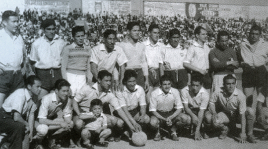

|
|
CLUB BOLIVAR12 DE ABRIL DE 1925 |
|
|
CLUB BOLIVAR12 DE ABRIL DE 1925 |
En 1927, dos años después de su fundación el Club Bolívar se inscribió a La Paz Fútbol Asociation, Bolívar por primera vez participó en un campeonato oficial, que se jugó en la cancha de Miraflores donde logró el subcampeonato. El primer equipo que disputó el campeonato de 1927 en el que, siendo debutante logró el subcampeonato detrás de Nimbles Sport estaba conformado por un equipo estable que estaba integrado por Walter Miranda, Enrique Tellería, Felipe Gutiérrez Nieto, Víctor Leclere, Carlos Terán, Germán Garnica, Roberto Segaline, Miguel Carreón, Luis Ernesto Sanz, siendo su capitán Humberto Barreda. Fueron incorporados un año después Alfredo Molina, Roberto Gómez y Carlos Álvarez.
Su primer partido amistoso internacional lo disputó el 3 de junio de 1927 al enfrentar en La Paz a Coquimbo Unido de Chile, fue derrotado por 2 a 1. En 1928 los celestes ocupan el quinto lugar en la tabla de colocaciones. En el torneo oficial del año 1929, el club Bolívar consigue el tercer lugar.
El 11 de mayo de 1930 se inicia el campeonato oficial, y finaliza el 30 de julio en el estadio principal Estadio Hernando Siles, consiguiendo el sub-campeonato el club Bolívar con siete unidades. En 1931 el torneo se cumplió con deficientes actuaciones de parte de los equipos que no contaban con buenas divisiones inferiores, limitándose el campeonato a sólo cuatro equipos.
Fue en 1932 cuando el club Bolívar logró por primera vez en su historia el campeonato jugado en dos series. El certamen se inició el 26 de mayo, teniendo que suspenderse por los acontecimientos de la Guerra del Chaco en fecha 25 de septiembre. "La Paz Fútbol Asociation", dejó establecido que la ubicación y puntaje del momento se reconocía en la tabla final. Por esa circunstancia el Club Bolívar fue declarado Campeón de ese año. En los años 1933 y 1934, los torneos se suspendieron por la contienda bélica del Chaco Concluida la guerra, el campeonato se reinició recién en 1935.
Los celestes se consagraron campeones por segunda vez en 1937. Bolívar fue subcampeón en 1938, campeón por cuatro años consecutivos entre 1939 y 1942, logrando el tetracampeonato. Ese equipo estaba liderado por los jugadores Walter Saavedra, Rojas, Romero, Plaza, Gutiérrez y Garzón.10 Fue también subcampeón en 1943 y 1945.
 1947 es un año señalado para Bolívar y para el fútbol boliviano, pues se produjo el debut con la casaca celeste de Víctor Agustín Ugarte, el tupiceño que llegó a La Paz para probarse y desde el primer día mostró su calidad. Bolívar lo hizo debutar frente a Ferroviario y ese mismo año estrenó su talento en la selección boliviana. Ugarte es para quienes lo vieron jugar, el indiscutible mejor jugador boliviano de la historia. Entreala derecho en el viejo esquema de 2-3-5, fue progresivamente retrasándose para manejar el equipo.